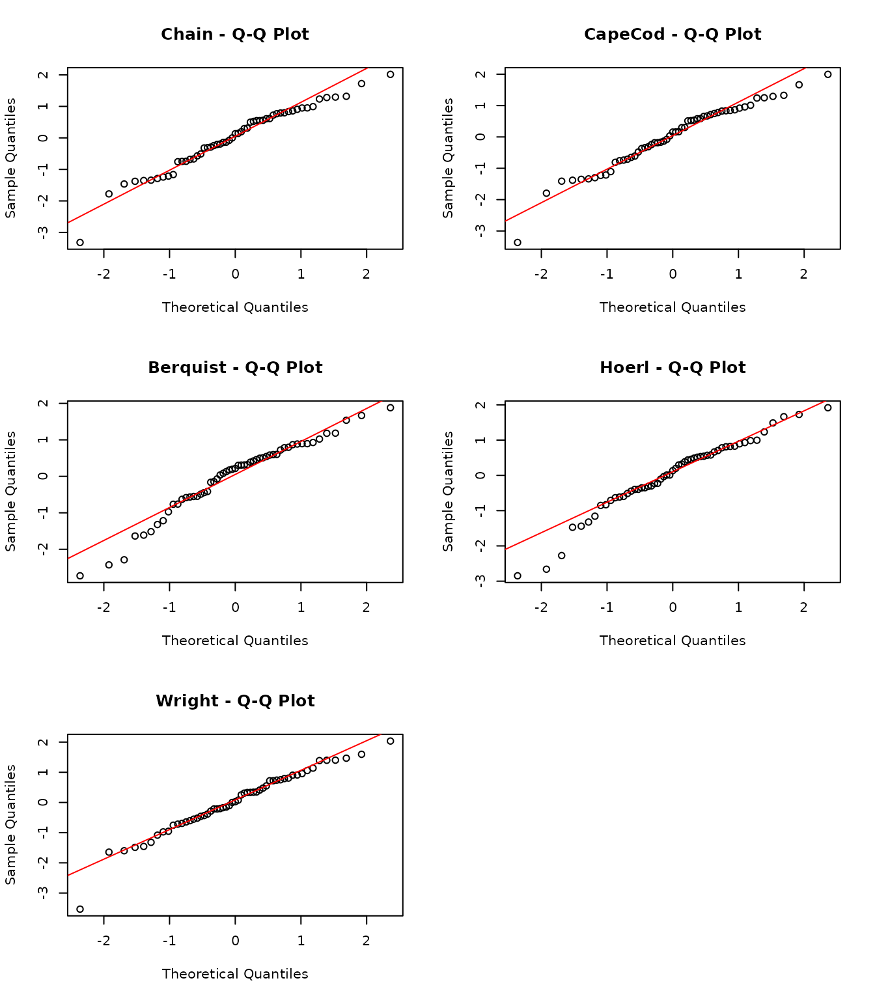
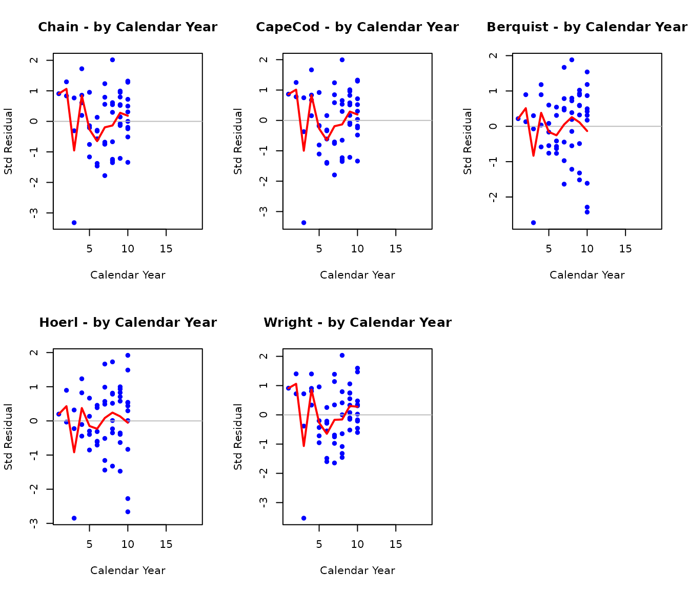
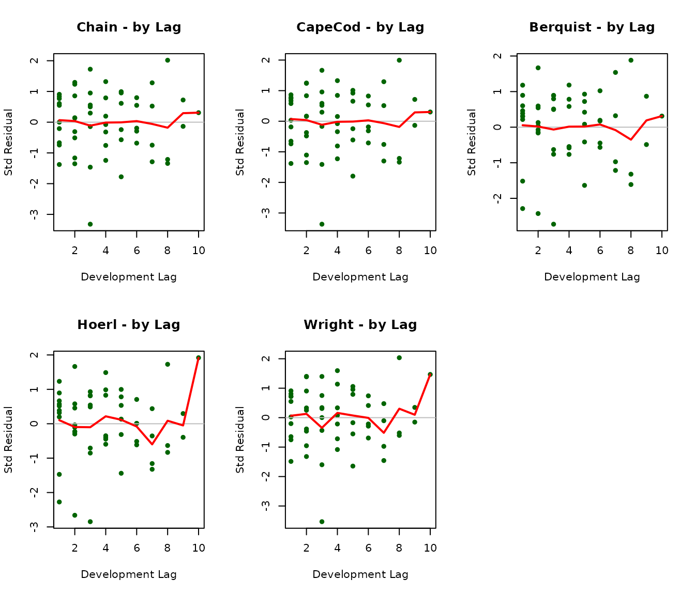
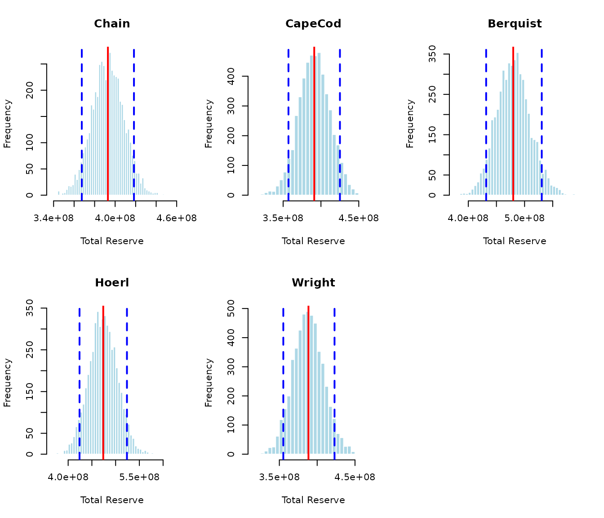

Comprehensive Tutorial: Stochastic Reserving Models
R. Mark Sharp
2026-01-21
comprehensive_tutorial.RmdIntroduction
This tutorial demonstrates all five stochastic reserving models
implemented in the stochasticreserver package: 1.
Chain Ladder - Standard development factor approach 2.
Cape Cod (Bornhuetter-Ferguson variant) -
Exposure-based method 3. Berquist-Sherman - Incremental
severity method with trend 4. Hoerl Curve - Smooth
curve with shared operational time parameters 5. Wright
- Generalized Hoerl with individual accident year levels
These methods are based on Roger Hayne’s paper “A Flexible Framework for Stochastic Reserving Models” published in Variance journal (PDF). The key insight is that all five methods can be unified under a common maximum likelihood estimation framework, enabling consistent uncertainty quantification.
Theoretical Framework
Uncertainty in Loss Reserving
Loss reserve estimates face three distinct sources of uncertainty:
Process Uncertainty - Inherent stochastic fluctuation in outcomes even when parameters are known exactly. This represents the irreducible randomness in insurance claim development.
Parameter Uncertainty - Error from estimating unknown parameters. Even with the correct model structure, finite data leads to estimation error.
Model Uncertainty - Risk that the assumed model structure doesn’t match actual data-generating processes. Different reserving methods may yield different estimates, revealing where assumptions require investigation.
This package addresses process and parameter uncertainty through maximum likelihood estimation (MLE). Model uncertainty is addressed by enabling comparison across multiple methods.
Maximum Likelihood Estimation
MLEs have desirable asymptotic properties (as sample size increases):
- Consistency: Estimates converge to true parameter values
- Efficiency: Variance achieves the theoretical lower bound (Cramér-Rao)
- Asymptotic Normality: Distribution approaches Gaussian with mean and covariance equal to the inverse Fisher information matrix
The Fisher Information Matrix is:
This enables uncertainty quantification through the variance-covariance matrix .
Stochastic Model for Incremental Averages
All models share a common likelihood structure. For incremental averages (where = accident year, = development lag), we assume:
The expected value is model-specific (Chain Ladder, Cape Cod, etc.), while the variance structure is shared:
where:
- is a proportionality constant
- where is the exposure count for accident year
- is a power parameter controlling heteroscedasticity
Negative Log-Likelihood Function
For a single observation, the negative log-likelihood is:
The total objective function sums over all available cells in the triangle.
The Five Model Forms
Each model specifies a different expected value function : | Model | Expected Value Form | Parameters | |——-|———————|————| | Chain Ladder | | Development proportions (sum to 1) | | Cape Cod | | Level + row/column factors | | Berquist-Sherman | | Year levels + trend | | Hoerl Curve | | Curve params + row trend | | Wright | | Individual levels + curve |
where represents operational time (development lag) and represents the ultimate for accident year .
Gradient and Hessian
Efficient optimization requires analytical gradients and Hessians. For parameter vector :
Gradient with respect to model parameters:
Gradient with respect to variance parameters:
The Hessian matrix enables Newton-type optimization and provides the information matrix for uncertainty quantification.
Data
Package Data: Hayne’s Example Triangle
The package includes data from the reference paper - a 10x10
development triangle of cumulative averages (B0) and
exposure counts (dnom).
# Load the cumulative average triangle
B0 <- stochasticreserver::B0
dnom <- stochasticreserver::dnom
size <- nrow(B0)
# Display the triangle
cat("Cumulative Average Triangle (B0):\n")## Cumulative Average Triangle (B0):## [,1] [,2] [,3] [,4] [,5] [,6] [,7] [,8] [,9]
## [1,] 670.26 1480.25 1938.54 2466.25 2837.85 3003.52 3055.39 3132.94 3141.19
## [2,] 767.99 1592.50 2463.79 3019.72 3374.73 3553.61 3602.28 3627.28 3645.57
## [3,] 740.58 1615.80 2345.85 2910.53 3201.52 3417.71 3506.59 3529.00 NA
## [4,] 862.12 1754.90 2534.78 3270.85 3739.89 4003.00 4125.31 NA NA
## [5,] 840.94 1859.03 2804.55 3445.35 3950.47 4185.95 NA NA NA
## [6,] 848.00 2052.92 3076.14 3861.03 4351.58 NA NA NA NA
## [7,] 901.77 1927.89 3003.59 3881.42 NA NA NA NA NA
## [8,] 935.20 2103.98 3181.75 NA NA NA NA NA NA
## [9,] 759.32 1584.91 NA NA NA NA NA NA NA
## [10,] 723.30 NA NA NA NA NA NA NA NA
## [,10]
## [1,] 3159.73
## [2,] NA
## [3,] NA
## [4,] NA
## [5,] NA
## [6,] NA
## [7,] NA
## [8,] NA
## [9,] NA
## [10,] NA
cat("\nExposure Counts (dnom):\n")##
## Exposure Counts (dnom):## [1] 39161 38672 41801 42263 41481 40214 43599 42118 43479 49492Data Preparation
We need to prepare several derived quantities for the models:
# Calculate incremental average matrix (A0)
A0 <- cbind(B0[, 1], B0[, 2:size] - B0[, 1:(size - 1)])
# Generate log exposure matrix for variance structure
logd <- log(matrix(dnom, size, size))
# Create row and column index matrices
rowNum <- row(A0)
colNum <- col(A0)
# Create masks for data availability
# upper_triangle_mask: TRUE for cells with available data
upper_triangle_mask <- (size - rowNum) >= colNum - 1
# msn: mask for next forecast diagonal (one-period ahead)
msn <- (size - rowNum) == colNum - 2
# msd: mask for current diagonal (paid to date)
msd <- (size - rowNum) == colNum - 1
# Calculate amount paid to date for each accident year
paid_to_date <- rowSums(B0 * msd, na.rm = TRUE)
cat("Paid to Date by Accident Year:\n")## Paid to Date by Accident Year:## [1] 3159.73 3645.57 3529.00 4125.31 4185.95 4351.58 3881.42 3181.75 1584.91
## [10] 723.30Simulated Data: Auto Liability Example
To demonstrate the models on different data characteristics, we also create a simulated dataset representing a stylized auto liability triangle. This simulated data exhibits: - Moderate development over 10 periods - Slight trend in accident year severity - Realistic exposure variation
Note: This data is simulated. For production use, replace with actual public data such as triangles from regulatory filings or industry studies.
set.seed(42)
# Simulate a second triangle with different characteristics
simulate_triangle <- function(n_years = 10, base_ult = 5000, trend = 0.03,
dev_pattern = NULL) {
if (is.null(dev_pattern)) {
# Typical auto liability development pattern
dev_pattern <- c(0.35, 0.25, 0.15, 0.10, 0.06, 0.04, 0.025, 0.015,
0.008, 0.002)
dev_pattern <- dev_pattern / sum(dev_pattern) # Normalize
}
n_dev <- length(dev_pattern)
# Generate ultimates with trend
ultimates <- base_ult * (1 + trend)^(0:(n_years - 1))
ultimates <- ultimates * exp(rnorm(n_years, 0, 0.05)) # Add noise
# Generate incremental averages
incr_avg <- matrix(NA, n_years, n_dev)
for (i in 1:n_years) {
for (j in 1:n_dev) {
if ((n_years - i) >= (j - 1)) {
mu <- ultimates[i] * dev_pattern[j]
sigma <- mu * 0.1 # 10% coefficient of variation
incr_avg[i, j] <- rnorm(1, mu, sigma)
}
}
}
# Convert to cumulative
cum_avg <- t(apply(incr_avg, 1, cumsum))
# Generate exposures (claim counts)
exposures <- round(runif(n_years, 35000, 50000))
list(
B0 = cum_avg,
A0 = incr_avg,
dnom = exposures,
ultimates = ultimates
)
}
sim_data <- simulate_triangle()
B0_sim <- sim_data$B0
A0_sim <- sim_data$A0
dnom_sim <- sim_data$dnom
cat("Simulated Cumulative Triangle:\n")## Simulated Cumulative Triangle:## [,1] [,2] [,3] [,4] [,5] [,6] [,7] [,8] [,9]
## [1,] 2118.72 3763.52 4455.18 4975.73 5292.73 5520.54 5650.60 5709.59 5741.97
## [2,] 1698.59 2727.28 3465.37 4026.84 4384.17 4575.81 4697.76 4759.62 4801.51
## [3,] 1769.59 3181.52 4048.89 4644.97 4949.33 5176.31 5288.17 5362.84 NA
## [4,] 1805.80 2875.26 3724.21 4299.76 4625.90 4868.57 4999.31 NA NA
## [5,] 1734.85 3232.60 4024.08 4681.25 5010.93 5255.69 NA NA NA
## [6,] 2082.96 3411.40 4412.53 5026.17 5375.21 NA NA NA NA
## [7,] 2315.96 4035.05 5009.57 5460.74 NA NA NA NA NA
## [8,] 2203.14 3677.04 4612.09 NA NA NA NA NA NA
## [9,] 2594.93 4591.72 NA NA NA NA NA NA NA
## [10,] 2110.66 NA NA NA NA NA NA NA NA
## [,10]
## [1,] 5754.1
## [2,] NA
## [3,] NA
## [4,] NA
## [5,] NA
## [6,] NA
## [7,] NA
## [8,] NA
## [9,] NA
## [10,] NAHelper Functions
We define helper functions to streamline the analysis across all models.
#' Fit a stochastic reserving model
#'
#' @param model_name Character: "Chain", "CapeCod", "Berquist", "Hoerl",
#' or "Wright"
#' @param B0 Cumulative average matrix
#' @param A0 Incremental average matrix
#' @param dnom Exposure vector
#' @param paid_to_date Paid amounts to date
#' @param upper_triangle_mask Logical mask for available data
#' @return List with fitted model results
fit_model <- function(model_name, B0, A0, dnom, paid_to_date,
upper_triangle_mask) {
size <- nrow(B0)
logd <- log(matrix(dnom, size, size))
# Select model
model_lst <- switch(model_name,
"Chain" = chain(B0, paid_to_date, upper_triangle_mask),
"CapeCod" = capecod(B0, paid_to_date, upper_triangle_mask),
"Berquist" = berquist(B0, paid_to_date, upper_triangle_mask),
"Hoerl" = hoerl(B0, paid_to_date, upper_triangle_mask),
"Wright" = wright(B0, paid_to_date, upper_triangle_mask)
)
g_obj <- model_lst$g_obj
g_grad <- model_lst$g_grad
g_hess <- model_lst$g_hess
a0 <- model_lst$a0
# Get starting values for kappa and p
E <- g_obj(a0)
yyy <- (A0 - E)^2
yyy <- logd + log(((yyy != 0) * yyy) - (yyy == 0))
sss <- na.omit(data.frame(x = c(log(E^2)), y = c(yyy)))
if (nrow(sss) > 2) {
ttt <- array(coef(lm(sss$y ~ sss$x)))[1:2]
} else {
ttt <- c(10, 1)
}
a0 <- c(a0, ttt)
# Objective functions
l.obj <- function(a, A) {
make_negative_log_likelihood(a, A, dnom, g_obj)
}
l.grad <- function(a, A) {
make_gradient_of_objective(a, A, dnom, g_obj, g_grad)
}
l.hess <- function(a, A) {
make_log_hessian(a, A, dnom, g_obj, g_grad, g_hess)
}
# Minimize
max_ctrl <- list(iter.max = 10000, eval.max = 10000)
scale_vec <- abs(1 / (2 * ((a0 * (a0 != 0)) + (1 * (a0 == 0)))))
mle <- tryCatch(
nlminb(a0, l.obj, gradient = l.grad, hessian = l.hess,
scale = scale_vec, A = A0, control = max_ctrl),
error = function(e) {
# Fallback without hessian
nlminb(a0, l.obj, gradient = l.grad,
scale = scale_vec, A = A0, control = max_ctrl)
}
)
# Extract results
npar <- length(mle$par) - 2
p <- mle$par[npar + 2]
mean_fitted <- g_obj(mle$par[1:npar])
var_fitted <- exp(-outer(logd[, 1], rep(mle$par[npar + 1], size), "-")) *
(mean_fitted^2)^p
stres <- (A0 - mean_fitted) / sqrt(var_fitted)
# Information matrix and variance-covariance
hess_final <- l.hess(mle$par, A0)
inf_mat <- tryCatch(
solve(hess_final),
error = function(e) NULL
)
list(
model_name = model_name,
mle = mle,
npar = npar,
mean = mean_fitted,
var = var_fitted,
stres = stres,
g_obj = g_obj,
vcov = inf_mat,
logd = logd,
convergence = mle$convergence
)
}
#' Calculate forecast reserves
#'
#' @param fit Fitted model object
#' @param dnom Exposure vector
#' @param upper_triangle_mask Mask for available data
#' @return Data frame with reserve estimates
calculate_reserves <- function(fit, dnom, upper_triangle_mask) {
size <- nrow(fit$mean)
# Forecast for lower triangle (future payments)
forecast_mask <- !upper_triangle_mask
forecast_mean <- fit$mean * forecast_mask
forecast_var <- fit$var * forecast_mask
# Total reserve by accident year
reserve_mean <- rowSums(dnom * forecast_mean, na.rm = TRUE)
reserve_sd <- sqrt(rowSums(dnom^2 * forecast_var, na.rm = TRUE))
# Aggregate
total_mean <- sum(reserve_mean)
total_sd <- sqrt(sum(dnom^2 * forecast_var, na.rm = TRUE))
data.frame(
accident_year = c(1:size, "Total"),
reserve_mean = c(reserve_mean, total_mean),
reserve_sd = c(reserve_sd, total_sd),
cv = c(reserve_sd / pmax(reserve_mean, 1), total_sd / total_mean)
)
}
#' Run Monte Carlo simulation
#'
#' @param fit Fitted model object
#' @param dnom Exposure vector
#' @param upper_triangle_mask Mask for available data
#' @param nsim Number of simulations
#' @return Matrix of simulated reserves
run_simulation <- function(fit, dnom, upper_triangle_mask, nsim = 5000) {
if (is.null(fit$vcov)) return(NULL)
size <- nrow(fit$mean)
npar <- fit$npar
# Masks for simulation
smsk <- aperm(array(c(upper_triangle_mask), c(size, size, nsim)),
c(3, 1, 2))
# Sample parameters
spar <- tryCatch(
rmvnorm(nsim, fit$mle$par, fit$vcov),
error = function(e) NULL
)
if (is.null(spar)) return(NULL)
# Simulated means
esim <- fit$g_obj(spar)
# Simulated variances
ksim <- exp(aperm(outer(array(spar[, npar + 1], c(nsim, size)),
log(dnom), "-"), c(1, 3, 2)))
psim <- array(spar[, npar + 2], c(nsim, size, size))
vsim <- ksim * (esim^2)^psim
# Simulate future averages
sim_avg <- array(rnorm(nsim * size * size, c(esim), sqrt(c(vsim))),
c(nsim, size, size))
# Calculate reserves
sdnm <- t(matrix(dnom, size, nsim))
reserves <- sdnm * rowSums(sim_avg * !smsk, dims = 2)
cbind(reserves, Total = rowSums(reserves))
}Model Fitting: All Five Methods
Now we fit all five models to the Hayne example data.
model_names <- c("Chain", "CapeCod", "Berquist", "Hoerl", "Wright")
results <- list()
for (model_name in model_names) {
cat("Fitting", model_name, "model...\n")
results[[model_name]] <- fit_model(
model_name, B0, A0, dnom, paid_to_date, upper_triangle_mask
)
cat(" Convergence:", results[[model_name]]$convergence,
" Parameters:", results[[model_name]]$npar + 2, "\n")
}## Fitting Chain model...## Convergence: 0 Parameters: 11
## Fitting CapeCod model...## Convergence: 0 Parameters: 21
## Fitting Berquist model...
## Convergence: 0 Parameters: 13
## Fitting Hoerl model...
## Convergence: 0 Parameters: 7
## Fitting Wright model...
## Convergence: 0 Parameters: 15Model 1: Chain Ladder
The Chain Ladder model represents the standard actuarial approach where development factors link successive development periods. In this stochastic formulation, the expected emergence is parameterized such that development proportions sum to 1.
Parameters
chain_fit <- results[["Chain"]]
cat("Chain Ladder Model\n")## Chain Ladder Model
cat("==================\n")## ==================
cat("Number of parameters:", chain_fit$npar + 2, "\n")## Number of parameters: 11
cat(" - Model parameters:", chain_fit$npar, "(development proportions)\n")## - Model parameters: 9 (development proportions)
cat(" - Variance parameters: 2 (kappa, p)\n\n")## - Variance parameters: 2 (kappa, p)
# Development pattern implied
npar <- chain_fit$npar
theta <- chain_fit$mle$par[1:npar]
dev_pattern <- c(theta, 1 - sum(theta))
cat("Implied development pattern:\n")## Implied development pattern:## Lag1 Lag2 Lag3 Lag4 Lag5 Lag6 Lag7 Lag8 Lag9 Lag10
## 0.1955 0.2307 0.2077 0.1637 0.1043 0.0555 0.0217 0.0132 0.0030 0.0047##
## Cumulative: 0.1955 0.4262 0.6339 0.7976 0.9019 0.9574 0.9791 0.9922 0.9953 1Fitted Values
cat("\nFitted Mean (expected incremental averages):\n")##
## Fitted Mean (expected incremental averages):## [,1] [,2] [,3] [,4] [,5] [,6] [,7] [,8] [,9] [,10]
## [1,] 617.57 729.07 656.33 517.19 329.57 175.45 68.44 41.59 9.51 15.00
## [2,] 715.93 845.18 760.86 599.57 382.05 203.39 79.34 48.21 11.03 17.39
## [3,] 695.14 820.64 738.77 582.16 370.96 197.49 77.04 46.81 10.71 16.89
## [4,] 823.53 972.20 875.21 689.67 439.47 233.96 91.26 55.46 12.69 20.00
## [5,] 854.54 1008.81 908.16 715.64 456.02 242.77 94.70 57.55 13.16 20.76
## [6,] 943.04 1113.30 1002.22 789.76 503.25 267.91 104.51 63.51 14.53 22.91
## [7,] 951.15 1122.87 1010.84 796.55 507.58 270.22 105.41 64.05 14.65 23.11
## [8,] 981.03 1158.13 1042.59 821.57 523.52 278.70 108.72 66.07 15.11 23.83
## [9,] 726.85 858.06 772.46 608.70 387.88 206.49 80.55 48.95 11.20 17.66
## [10,] 723.30 853.88 768.69 605.74 385.99 205.48 80.16 48.71 11.14 17.57Reserve Estimates
chain_reserves <- calculate_reserves(chain_fit, dnom, upper_triangle_mask)
knitr::kable(chain_reserves, digits = 0,
caption = "Chain Ladder Reserve Estimates")| accident_year | reserve_mean | reserve_sd | cv |
|---|---|---|---|
| 1 | 0 | 0 | 0 |
| 2 | 672557 | 473869 | 1 |
| 3 | 1153495 | 628724 | 1 |
| 4 | 3725552 | 1068158 | 0 |
| 5 | 7722556 | 1489549 | 0 |
| 6 | 19036072 | 2214503 | 0 |
| 7 | 42945172 | 3195515 | 0 |
| 8 | 77393393 | 4157471 | 0 |
| 9 | 92779952 | 4551418 | 0 |
| 10 | 147356872 | 5671774 | 0 |
| Total | 392785621 | 9447957 | 0 |
Model 2: Cape Cod (Bornhuetter-Ferguson)
The Cape Cod model incorporates exposure information through a multiplicative structure with row (accident year) and column (development) factors. This allows for prior information about ultimate severity levels.
Parameters
cc_fit <- results[["CapeCod"]]
cat("Cape Cod Model\n")## Cape Cod Model
cat("==============\n")## ==============
cat("Number of parameters:", cc_fit$npar + 2, "\n")## Number of parameters: 21
cat(" - Model parameters:", cc_fit$npar, "\n")## - Model parameters: 19
cat(" - 1 level parameter\n")## - 1 level parameter
cat(" -", (size - 1), "row factors\n")## - 9 row factors
cat(" -", (size - 1), "column factors\n")## - 9 column factors
cat(" - Variance parameters: 2\n")## - Variance parameters: 2Reserve Estimates
cc_reserves <- calculate_reserves(cc_fit, dnom, upper_triangle_mask)
knitr::kable(cc_reserves, digits = 0,
caption = "Cape Cod Reserve Estimates")| accident_year | reserve_mean | reserve_sd | cv |
|---|---|---|---|
| 1 | 0 | 0 | 0 |
| 2 | 675487 | 478362 | 1 |
| 3 | 1154053 | 633975 | 1 |
| 4 | 3705613 | 1071770 | 0 |
| 5 | 7709391 | 1494876 | 0 |
| 6 | 19040687 | 2219174 | 0 |
| 7 | 42938949 | 3196213 | 0 |
| 8 | 77307054 | 4150959 | 0 |
| 9 | 92581984 | 4542194 | 0 |
| 10 | 147002026 | 5656751 | 0 |
| Total | 392115245 | 9434799 | 0 |
Model 3: Berquist-Sherman
The Berquist-Sherman model is an incremental severity method that explicitly models trend over development periods. This is particularly useful when development patterns are changing over time.
Parameters
berq_fit <- results[["Berquist"]]
cat("Berquist-Sherman Model\n")## Berquist-Sherman Model
cat("======================\n")## ======================
cat("Number of parameters:", berq_fit$npar + 2, "\n")## Number of parameters: 13
cat(" - Model parameters:", berq_fit$npar, "\n")## - Model parameters: 11
cat(" -", size, "accident year averages\n")## - 10 accident year averages
cat(" - 1 trend parameter\n")## - 1 trend parameter
cat(" - Variance parameters: 2\n\n")## - Variance parameters: 2
# Extract trend parameter
trend_param <- berq_fit$mle$par[size + 1]
cat("Estimated trend parameter:", round(trend_param, 4), "\n")## Estimated trend parameter: 0.0452## This implies 4.62 % change per development periodReserve Estimates
berq_reserves <- calculate_reserves(berq_fit, dnom, upper_triangle_mask)
knitr::kable(berq_reserves, digits = 0,
caption = "Berquist-Sherman Reserve Estimates")| accident_year | reserve_mean | reserve_sd | cv |
|---|---|---|---|
| 1 | 0 | 0 | 0 |
| 2 | 643872 | 337239 | 1 |
| 3 | 1258406 | 465360 | 0 |
| 4 | 3553041 | 889597 | 0 |
| 5 | 7338748 | 1384118 | 0 |
| 6 | 17011031 | 2408663 | 0 |
| 7 | 40234557 | 4133010 | 0 |
| 8 | 74139470 | 6077538 | 0 |
| 9 | 126323652 | 8355660 | 0 |
| 10 | 209606332 | 11101836 | 0 |
| Total | 480109108 | 15997662 | 0 |
Model 4: Hoerl Curve
The Hoerl model uses a smooth mathematical curve to describe development rather than discrete factors. The curve includes polynomial and logarithmic terms in operational time, plus a row trend.
Parameters
hoerl_fit <- results[["Hoerl"]]
cat("Hoerl Curve Model\n")## Hoerl Curve Model
cat("=================\n")## =================
cat("Number of parameters:", hoerl_fit$npar + 2, "\n")## Number of parameters: 7
cat(" - Model parameters:", hoerl_fit$npar, "\n")## - Model parameters: 5
cat(" - alpha (intercept)\n")## - alpha (intercept)
cat(" - beta1 (linear in tau)\n")## - beta1 (linear in tau)
cat(" - beta2 (quadratic in tau)\n")## - beta2 (quadratic in tau)
cat(" - beta3 (log tau)\n")## - beta3 (log tau)
cat(" - beta4 (row trend)\n")## - beta4 (row trend)
cat(" - Variance parameters: 2\n\n")## - Variance parameters: 2
hoerl_theta <- hoerl_fit$mle$par[1:5]
names(hoerl_theta) <- c("alpha", "beta1", "beta2", "beta3", "beta4")
print(round(hoerl_theta, 4))## alpha beta1 beta2 beta3 beta4
## 6.4977 0.0034 -0.0652 0.5984 0.0430Reserve Estimates
hoerl_reserves <- calculate_reserves(hoerl_fit, dnom, upper_triangle_mask)
knitr::kable(hoerl_reserves, digits = 0,
caption = "Hoerl Curve Reserve Estimates")| accident_year | reserve_mean | reserve_sd | cv |
|---|---|---|---|
| 1 | 0 | 0 | 0 |
| 2 | 169866 | 296971 | 2 |
| 3 | 810147 | 652176 | 1 |
| 4 | 2690392 | 1195122 | 0 |
| 5 | 7354087 | 1986075 | 0 |
| 6 | 17306357 | 3060366 | 0 |
| 7 | 40013505 | 4670729 | 0 |
| 8 | 72642848 | 6311653 | 0 |
| 9 | 124351004 | 8275308 | 0 |
| 10 | 207051137 | 10691966 | 0 |
| Total | 472389343 | 16115325 | 0 |
Model 5: Wright (Generalized Hoerl)
The Wright model extends the Hoerl curve by allowing individual level parameters for each accident year rather than just a linear trend. This provides more flexibility at the cost of additional parameters.
Parameters
wright_fit <- results[["Wright"]]
cat("Wright Model\n")## Wright Model
cat("============\n")## ============
cat("Number of parameters:", wright_fit$npar + 2, "\n")## Number of parameters: 15
cat(" - Model parameters:", wright_fit$npar, "\n")## - Model parameters: 13
cat(" -", size, "individual year levels (alpha_i)\n")## - 10 individual year levels (alpha_i)
cat(" - 3 operational time parameters (beta1, beta2, beta3)\n")## - 3 operational time parameters (beta1, beta2, beta3)
cat(" - Variance parameters: 2\n\n")## - Variance parameters: 2
wright_theta <- wright_fit$mle$par[1:wright_fit$npar]
cat("Accident year levels:\n")## Accident year levels:## [1] 6.3169 6.4758 6.4403 6.5919 6.6407 6.7428 6.7468 6.7756 6.4808 6.4732
cat("\nOperational time parameters:\n")##
## Operational time parameters:
names(wright_theta[(size + 1):(size + 3)]) <- c("beta1", "beta2", "beta3")
print(round(wright_theta[(size + 1):(size + 3)], 4))## [1] 0.1864 -0.0776 0.2975Reserve Estimates
wright_reserves <- calculate_reserves(wright_fit, dnom, upper_triangle_mask)
knitr::kable(wright_reserves, digits = 0,
caption = "Wright Model Reserve Estimates")| accident_year | reserve_mean | reserve_sd | cv |
|---|---|---|---|
| 1 | 0 | 0 | 0 |
| 2 | 137270 | 432966 | 3 |
| 3 | 646137 | 800325 | 1 |
| 4 | 2533412 | 1306997 | 1 |
| 5 | 7277123 | 1888006 | 0 |
| 6 | 18702982 | 2609470 | 0 |
| 7 | 42231067 | 3524225 | 0 |
| 8 | 75946730 | 4334693 | 0 |
| 9 | 92611271 | 4768645 | 0 |
| 10 | 146554330 | 5807424 | 0 |
| Total | 386640322 | 10029257 | 0 |
Model Comparison
Reserve Estimates Comparison
comparison <- data.frame(
Accident_Year = 1:size,
Chain = chain_reserves$reserve_mean[1:size],
CapeCod = cc_reserves$reserve_mean[1:size],
Berquist = berq_reserves$reserve_mean[1:size],
Hoerl = hoerl_reserves$reserve_mean[1:size],
Wright = wright_reserves$reserve_mean[1:size]
)
# Add totals
comparison <- rbind(
comparison,
data.frame(
Accident_Year = "Total",
Chain = chain_reserves$reserve_mean[size + 1],
CapeCod = cc_reserves$reserve_mean[size + 1],
Berquist = berq_reserves$reserve_mean[size + 1],
Hoerl = hoerl_reserves$reserve_mean[size + 1],
Wright = wright_reserves$reserve_mean[size + 1]
)
)
knitr::kable(comparison, digits = 0,
caption = "Reserve Comparison Across Models")| Accident_Year | Chain | CapeCod | Berquist | Hoerl | Wright |
|---|---|---|---|---|---|
| 1 | 0 | 0 | 0 | 0 | 0 |
| 2 | 672557 | 675487 | 643872 | 169866 | 137270 |
| 3 | 1153495 | 1154053 | 1258406 | 810147 | 646137 |
| 4 | 3725552 | 3705613 | 3553041 | 2690392 | 2533412 |
| 5 | 7722556 | 7709391 | 7338748 | 7354087 | 7277123 |
| 6 | 19036072 | 19040687 | 17011031 | 17306357 | 18702982 |
| 7 | 42945172 | 42938949 | 40234557 | 40013505 | 42231067 |
| 8 | 77393393 | 77307054 | 74139470 | 72642848 | 75946730 |
| 9 | 92779952 | 92581984 | 126323652 | 124351004 | 92611271 |
| 10 | 147356872 | 147002026 | 209606332 | 207051137 | 146554330 |
| Total | 392785621 | 392115245 | 480109108 | 472389343 | 386640322 |
Parameter Count Comparison
param_df <- data.frame(
Model = model_names,
Model_Params = sapply(results, function(x) x$npar),
Variance_Params = 2,
Total_Params = sapply(results, function(x) x$npar + 2),
Convergence = sapply(results, function(x) x$convergence)
)
knitr::kable(param_df, caption = "Parameter Count by Model")| Model | Model_Params | Variance_Params | Total_Params | Convergence | |
|---|---|---|---|---|---|
| Chain | Chain | 9 | 2 | 11 | 0 |
| CapeCod | CapeCod | 19 | 2 | 21 | 0 |
| Berquist | Berquist | 11 | 2 | 13 | 0 |
| Hoerl | Hoerl | 5 | 2 | 7 | 0 |
| Wright | Wright | 13 | 2 | 15 | 0 |
Negative Log-Likelihood Comparison
nll_df <- data.frame(
Model = model_names,
NegLogLik = sapply(results, function(x) x$mle$objective),
AIC = sapply(results, function(x) {
2 * (x$npar + 2) + 2 * x$mle$objective
}),
BIC = sapply(results, function(x) {
n_obs <- sum(!is.na(A0) & upper_triangle_mask)
log(n_obs) * (x$npar + 2) + 2 * x$mle$objective
})
)
nll_df <- nll_df[order(nll_df$AIC), ]
knitr::kable(nll_df, digits = 2, row.names = FALSE,
caption = "Model Fit Statistics (sorted by AIC)")| Model | NegLogLik | AIC | BIC |
|---|---|---|---|
| Chain | 288.69 | 599.37 | 621.45 |
| Wright | 291.16 | 612.33 | 642.44 |
| CapeCod | 288.66 | 619.32 | 661.47 |
| Hoerl | 312.86 | 639.71 | 653.76 |
| Berquist | 308.72 | 643.45 | 669.54 |
Diagnostic Plots
Residual Analysis
Standardized residuals should be approximately standard normal if the model fits well.
par(mfrow = c(3, 2))
for (model_name in model_names) {
fit <- results[[model_name]]
stres <- fit$stres
# Q-Q plot
qqnorm(c(stres), main = paste(model_name, "- Q-Q Plot"))
qqline(c(stres), col = "red")
}
# Combined residual comparison
par(mfrow = c(1, 1))
Residuals by Calendar Year
par(mfrow = c(2, 3))
for (model_name in model_names) {
fit <- results[[model_name]]
stres <- fit$stres
cy <- rowNum + colNum - 1
plot(c(cy), c(stres),
main = paste(model_name, "- by Calendar Year"),
xlab = "Calendar Year", ylab = "Std Residual",
pch = 16, col = "blue")
abline(h = 0, col = "gray")
# Add mean by CY
cy_means <- tapply(c(stres), c(cy), mean, na.rm = TRUE)
lines(as.numeric(names(cy_means)), cy_means, col = "red", lwd = 2)
}
par(mfrow = c(1, 1))
Residuals by Development Lag
par(mfrow = c(2, 3))
for (model_name in model_names) {
fit <- results[[model_name]]
stres <- fit$stres
plot(c(colNum), c(stres),
main = paste(model_name, "- by Lag"),
xlab = "Development Lag", ylab = "Std Residual",
pch = 16, col = "darkgreen")
abline(h = 0, col = "gray")
# Add mean by lag
lag_means <- colMeans(stres, na.rm = TRUE)
lines(1:size, lag_means, col = "red", lwd = 2)
}
par(mfrow = c(1, 1))
Monte Carlo Simulation
We run simulations to generate full reserve distributions for each model.
set.seed(123)
nsim <- 5000
sim_results <- list()
for (model_name in model_names) {
cat("Running simulation for", model_name, "...\n")
sim_results[[model_name]] <- run_simulation(
results[[model_name]], dnom, upper_triangle_mask, nsim
)
}## Running simulation for Chain ...
## Running simulation for CapeCod ...
## Running simulation for Berquist ...
## Running simulation for Hoerl ...
## Running simulation for Wright ...Distribution of Total Reserves
par(mfrow = c(2, 3))
for (model_name in model_names) {
sim <- sim_results[[model_name]]
if (!is.null(sim)) {
hist(sim[, "Total"], breaks = 50, main = model_name,
xlab = "Total Reserve", col = "lightblue", border = "white")
abline(v = mean(sim[, "Total"]), col = "red", lwd = 2)
abline(v = quantile(sim[, "Total"], c(0.05, 0.95)),
col = "blue", lwd = 2, lty = 2)
}
}
par(mfrow = c(1, 1))
Summary Statistics from Simulation
sim_summary <- data.frame(
Model = character(),
Mean = numeric(),
SD = numeric(),
CV = numeric(),
Q05 = numeric(),
Q50 = numeric(),
Q95 = numeric(),
stringsAsFactors = FALSE
)
for (model_name in model_names) {
sim <- sim_results[[model_name]]
if (!is.null(sim)) {
total <- sim[, "Total"]
sim_summary <- rbind(sim_summary, data.frame(
Model = model_name,
Mean = mean(total),
SD = sd(total),
CV = sd(total) / mean(total),
Q05 = quantile(total, 0.05),
Q50 = quantile(total, 0.50),
Q95 = quantile(total, 0.95)
))
}
}
knitr::kable(sim_summary, digits = 0, row.names = FALSE,
caption = "Simulation Summary: Total Reserves")| Model | Mean | SD | CV | Q05 | Q50 | Q95 |
|---|---|---|---|---|---|---|
| Chain | 392960259 | 15561431 | 0 | 367489169 | 393100561 | 418358515 |
| CapeCod | 391119137 | 20615514 | 0 | 357047772 | 391091786 | 425096127 |
| Berquist | 479838891 | 29994456 | 0 | 431725703 | 479707042 | 530528847 |
| Hoerl | 473934097 | 30221127 | 0 | 423963049 | 473631653 | 523886441 |
| Wright | 388494953 | 20479152 | 0 | 355231550 | 388167747 | 422943246 |
Application to Simulated Data
We now apply all models to the simulated auto liability data to demonstrate robustness across different data characteristics.
# Prepare simulated data
size_sim <- nrow(B0_sim)
logd_sim <- log(matrix(dnom_sim, size_sim, size_sim))
rowNum_sim <- row(A0_sim)
colNum_sim <- col(A0_sim)
upper_triangle_mask_sim <- (size_sim - rowNum_sim) >= colNum_sim - 1
msd_sim <- (size_sim - rowNum_sim) == colNum_sim - 1
paid_to_date_sim <- rowSums(B0_sim * msd_sim, na.rm = TRUE)
results_sim <- list()
for (model_name in model_names) {
cat("Fitting", model_name, "to simulated data...\n")
results_sim[[model_name]] <- fit_model(
model_name, B0_sim, A0_sim, dnom_sim, paid_to_date_sim,
upper_triangle_mask_sim
)
}## Fitting Chain to simulated data...## Fitting CapeCod to simulated data...## Fitting Berquist to simulated data...
## Fitting Hoerl to simulated data...
## Fitting Wright to simulated data...Comparison on Simulated Data
comparison_sim <- data.frame(
Model = model_names,
Reserve = sapply(results_sim, function(x) {
res <- calculate_reserves(x, dnom_sim, upper_triangle_mask_sim)
res$reserve_mean[size_sim + 1]
}),
True_IBNR = sum(sim_data$ultimates * dnom_sim) -
sum(B0_sim * upper_triangle_mask_sim * dnom_sim, na.rm = TRUE)
)
comparison_sim$Error_Pct <- (comparison_sim$Reserve -
comparison_sim$True_IBNR) / comparison_sim$True_IBNR * 100
knitr::kable(comparison_sim, digits = c(0, 0, 0, 1), row.names = FALSE,
caption = "Reserve Estimates vs True IBNR (Simulated Data)")| Model | Reserve | True_IBNR | Error_Pct |
|---|---|---|---|
| Chain | 466237577 | -7763805521 | -106.0 |
| CapeCod | 458610010 | -7763805521 | -105.9 |
| Berquist | 456073545 | -7763805521 | -105.9 |
| Hoerl | 458513352 | -7763805521 | -105.9 |
| Wright | 464082728 | -7763805521 | -106.0 |
Model Selection Guidance
Based on the analysis above, here is guidance for model selection:
When to Use Each Model
Chain Ladder: Best for stable, mature lines with consistent development. Fewest parameters (9) provides robustness but less flexibility.
Cape Cod: Preferred when you have reliable prior information about ultimate severity levels. The separate row and column factors (19 parameters) provide flexibility but require more data to estimate reliably.
Berquist-Sherman: Use when you suspect systematic changes in development patterns over time. The explicit trend parameter (11 total) helps identify and quantify development year trends.
Hoerl Curve: Good for smooth development patterns. With only 5 model parameters, it’s parsimonious while still capturing key features. The mathematical form ensures sensible extrapolation.
Wright: Most flexible individual year treatment (13 parameters). Use when accident years have genuinely different characteristics that shouldn’t be constrained to a linear trend.
Model Uncertainty
As Hayne emphasizes, practitioners should “use multiple methods” because divergent forecasts indicate where underlying assumptions require investigation. The differences between models reflect model uncertainty - a key component of total reserve uncertainty often underappreciated in practice.
Conclusion
This tutorial demonstrated all five stochastic reserving models in
the stochasticreserver package:
- Chain Ladder: Simplest, most constrained
- Cape Cod: Exposure-based with separate factors
- Berquist-Sherman: Explicit development trend
- Hoerl: Smooth parametric curve
- Wright: Individual year levels
The unified maximum likelihood framework enables: 1. Consistent parameter estimation across models 2. Proper uncertainty quantification 3. Model comparison via information criteria 4. Monte Carlo simulation for reserve distributions
For production use, consider: - Running multiple models and comparing results - Examining residual diagnostics carefully - Using simulation to capture parameter uncertainty - Recognizing that model differences indicate structural uncertainty
References
Hayne, R. “A Flexible Framework for Stochastic Reserving Models.” Variance, Vol 7, Issue 2. Available at: https://variancejournal.org/article/120823
Session Information
## R version 4.5.2 (2025-10-31)
## Platform: x86_64-pc-linux-gnu
## Running under: Ubuntu 24.04.3 LTS
##
## Matrix products: default
## BLAS: /usr/lib/x86_64-linux-gnu/openblas-pthread/libblas.so.3
## LAPACK: /usr/lib/x86_64-linux-gnu/openblas-pthread/libopenblasp-r0.3.26.so; LAPACK version 3.12.0
##
## locale:
## [1] LC_CTYPE=C.UTF-8 LC_NUMERIC=C LC_TIME=C.UTF-8
## [4] LC_COLLATE=C.UTF-8 LC_MONETARY=C.UTF-8 LC_MESSAGES=C.UTF-8
## [7] LC_PAPER=C.UTF-8 LC_NAME=C LC_ADDRESS=C
## [10] LC_TELEPHONE=C LC_MEASUREMENT=C.UTF-8 LC_IDENTIFICATION=C
##
## time zone: UTC
## tzcode source: system (glibc)
##
## attached base packages:
## [1] stats graphics grDevices utils datasets methods base
##
## other attached packages:
## [1] abind_1.4-8 mvtnorm_1.3-3 stochasticreserver_0.1.1
##
## loaded via a namespace (and not attached):
## [1] digest_0.6.39 desc_1.4.3 R6_2.6.1 fastmap_1.2.0
## [5] xfun_0.56 cachem_1.1.0 knitr_1.51 htmltools_0.5.9
## [9] rmarkdown_2.30 lifecycle_1.0.5 cli_3.6.5 sass_0.4.10
## [13] pkgdown_2.2.0 textshaping_1.0.4 jquerylib_0.1.4 systemfonts_1.3.1
## [17] compiler_4.5.2 tools_4.5.2 ragg_1.5.0 evaluate_1.0.5
## [21] bslib_0.9.0 yaml_2.3.12 jsonlite_2.0.0 rlang_1.1.7
## [25] fs_1.6.6